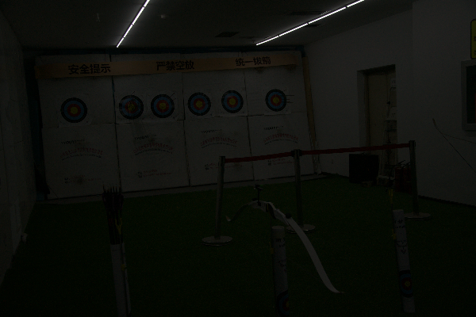
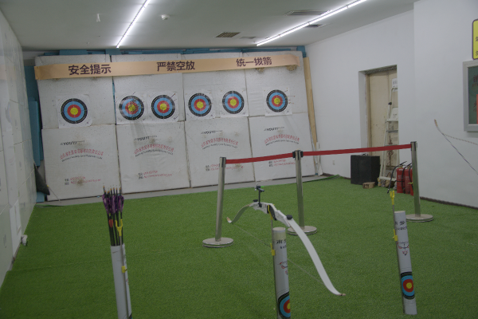
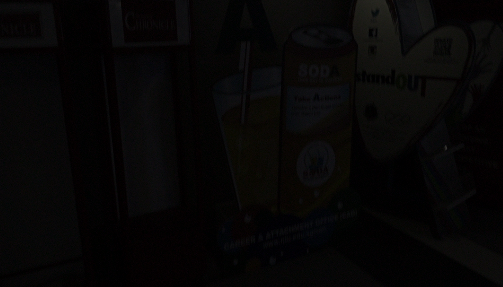
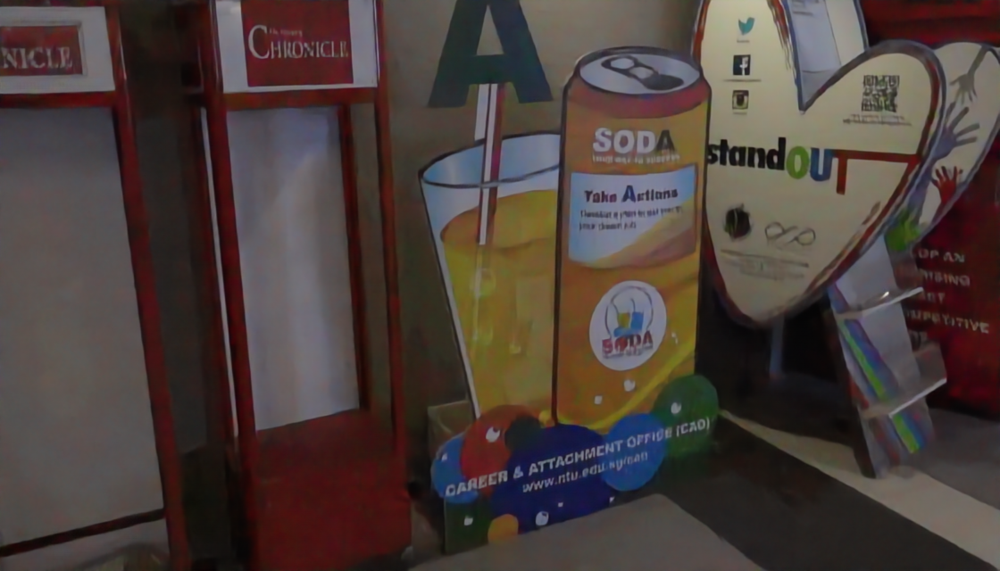

Kế thừa kiến trúc DarkIR kết hợp cải tiến Max-RGB Prior và Gated Skip Connection
Thu nhận hình ảnh trong điều kiện ban đêm hoặc thiếu sáng gặp phải sự suy thoái vật lý nghiêm trọng do lượng photon giới hạn và đặc tính phần cứng thu nhận:
Đối chiếu trực quan trên các tập dữ liệu thực tế (Benchmark Datasets) giữa ảnh thu nhận thực nghiệm và ảnh chuẩn tham chiếu:

Tối đen, mất tương phản, nhiễu ẩn
Đủ sáng, cân bằng trắng, giàu chi tiết
Vừa tối vừa nhòe vệt chuyển động
Đủ sáng, biên cạnh sắc nét, sạch mờPhân tích khoảng cách giữa các nghiên cứu tiền nhiệm và định hướng giải pháp tích hợp của đề tài:
Chụp ảnh và thu nhận thị giác trong điều kiện ánh sáng yếu (Low-Light) là bài toán thực tế có tính ứng dụng cao:
Hỗ trợ trích xuất khuôn mặt, biển số xe và hành vi đối tượng trong môi trường chiếu sáng yếu hoặc mất điện đột ngột.
Làm tầng tiền xử lý quan trọng giúp các thuật toán nhận diện vật cản (YOLO) và phát hiện làn đường hoạt động tin cậy ban đêm.
Khắc phục nhược điểm cảm biến nhỏ của smartphone, chụp đêm rõ nét, màu sắc tự nhiên mà không cần bật đèn flash chói gắt.
Tăng cường độ rõ của hình ảnh nội soi quang học trong các khoang tối cơ thể, hỗ trợ bác sĩ chẩn đoán chính xác tổn thương.
Bài toán Tăng cường Chất lượng Ảnh Thiếu sáng (LLIE) được phát biểu toán học tường minh theo hướng Image-to-Image Learning:
Sơ đồ ánh xạ trực quan và mô hình hóa quá trình suy thoái quang học phi tuyến tính:
Các thuật toán xử lý ảnh số cổ điển dựa trên biến đổi điểm ảnh hoặc lọc không gian gặp những hạn chế căn bản:
• Biến đổi hàm phân bố tích lũy CDF nhằm kéo giãn mức xám.
• Hạn chế: Khuếch đại mù quáng cả nhiễu hạt vùng tối; gây hiện tượng bão hòa màu quá mức và mất cân bằng tương phản cục bộ.
• Ánh xạ phi tuyến dạng lũy thừa Iout = Iinγ (γ < 1).
• Hạn chế: Hệ số cố định toàn cục, không thích ứng theo ngữ cảnh từng vùng; làm lộ rõ các đốm nhiễu và sai lệch màu da/nền.
• Dùng bộ lọc Gaussian đa tỉ lệ trong miền logarit để ước lượng độ rọi.
• Hạn chế: Xuất hiện quầng sáng khó chịu (Halo artifacts) quanh các biên cạnh có độ tương phản cao; tốc độ lọc Gaussian đa tỷ lệ chậm trên ảnh lớn.
Đề tài chắt lọc bài học và kế thừa kỹ thuật từ 4 công trình đỉnh cao thuộc hội nghị CVF:
Kết hợp miền tần số (FreMLP) ở Encoder và miền không gian (Di-SpAM) ở Decoder. Đề tài kế thừa cấu trúc cốt lõi này.
Phân tích khuyết tật của HSV trong bóng tối, gợi ý giải pháp Max-RGB Prior Imax = max(R,G,B) làm kênh dẫn hướng độ rọi.
Đề xuất cơ chế Gated Skip Connection 1×1 chống rò rỉ nhiễu từ Encoder sang Decoder, tối ưu hóa cho thiết bị biên.
Tổng kết 22 đội thi, khẳng định nghịch lý phần GPU đắt đỏ và khuyến nghị các kiến trúc CNN gọn nhẹ có tính thực dụng cao.
Tuân thủ nghiêm ngặt các định hướng học thuật của Giảng viên môn CS2203:
Giải pháp đề xuất được xây dựng dựa trên 4 trụ cột công nghệ đồng bộ:
Kiến trúc Asymmetric U-Net với C = 24 kênh cơ sở, tối ưu hóa cho tài nguyên biên:
Gồm 3 cấp độ phân giải với khối FreMLP (Fourier Domain). Chuyển đổi tensor sang miền phổ để nắm bắt năng lượng chiếu sáng toàn cảnh.
Gồm 3 cấp độ phục hồi với khối Di-SpAM (Dilated Attention) và Gated Skip. Tái tạo chi tiết vi mô và triệt tiêu xung nhiễu.
Bổ sung kênh thứ 4 dẫn hướng độ rọi vật lý cho mạng mà không tốn thêm tham số suy luận:
• Theo giả thuyết thế giới trắng (White-Patch Retinex), giá trị lớn nhất trong 3 kênh màu phản ánh trực tiếp cường độ trường sáng chiếu rọi.
• Trong bóng tối, các kênh RGB riêng lẻ bị nhiễu làm méo, nhưng kênh cực đại phản ánh xấp xỉ phân bố độ rọi không gian.
• Cung cấp ngay bản đồ phân bố ánh sáng cho tầng tích chập đầu tiên.
• Tiết kiệm tài nguyên: Không cần xây dựng một mạng con dự đoán ánh sáng cồng kềnh, giảm hàng trăm nghìn phép tính và giúp mô hình hội tụ nhanh hơn.
Kế thừa từ DarkIR (CVPR 2025): Biến đổi đặc trưng sang miền phổ Fourier để nắm bắt thông tin toàn cảnh:
• Trường tiếp nhận toàn cảnh O(N log N): Mỗi phần tử phổ tần số kết nối với toàn bộ các điểm ảnh trong khung hình mà không cần kernel lớn.
• Đạt hiệu quả của Transformer nhưng với chi phí tính toán cực thấp của mạng CNN gọn nhẹ.
Khối Di-SpAM phụ trách khôi phục chi tiết cục bộ, góc cạnh và kết cấu bề mặt sắc nét:
Tích chập 3×3 chuẩn tập trung tái tạo các đường nét biên cạnh sắc sảo, sợi vải, vân gỗ và kết cấu vi mô.
Tăng bước dãn cách điểm lấy mẫu, nắm bắt hình dạng biên giới vật thể và mối quan hệ giữa các vùng lân cận.
Bao phủ trường tiếp nhận rộng lớn mà không làm tăng bất kỳ tham số nào, bảo đảm sự đồng nhất màu sắc trên diện rộng.
Khắc phục hiện tượng Noise Leakage nghiêm trọng trong mạng U-Net truyền thống (lấy cảm hứng từ Edge-LLIE):
• U-Net truyền thống cộng hoặc ghép nối trực tiếp đặc trưng: Xdec = Xup + Xenc.
• Nguy cơ trong ảnh tối: Tầng nông Encoder chứa đầy xung nhiễu cảm biến hạt. Nối tắt trực tiếp sẽ bơm thẳng nhiễu sang Decoder, làm ảnh đầu ra bị lốm đốm hạt sần sùi.
• Mặt nạ Sigmoid tự động triệt tiêu các xung nhiễu ngẫu nhiên (trọng số gần 0), chỉ cho phép biên cạnh có độ tin cậy cao đi qua: Xskip = Xenc ⊙ Mgate.
Cơ chế Simplified Channel Attention (SCA) tái cân bằng kênh màu kết hợp học thặng dư toàn cục:
• Trích xuất thông tin kênh qua AdaptiveAvgPool2D.
• Chiếu tuyến tính trực tiếp qua Conv1×1 thay vì cấu trúc FC thắt cổ chai phức tạp của SE-Net.
• Giảm 75% số tham số của khối Attention, tái hiện màu sắc đồng nhất trên toàn dải màu.
• Tầng chiếu cuối cùng đưa số kênh C = 24 về 3 kênh màu RGB (ΔY).
• Yfinal = Xrgb + ΔY.
• Mạng chỉ cần học phần ánh sáng và chi tiết bị thiếu hụt, giúp gradient lan truyền ổn định và hội tụ nhanh chóng.
Tối ưu hóa đồng thời độ trung thực mức điểm ảnh, độ tương đồng cấu trúc thị giác và ổn định gradient sâu:
Tối thiểu hóa sai lệch mức pixel tuyệt đối. Tránh hiện tượng làm nhòe mờ (blurring) của hàm mất mát L2/MSE.
ℒssim = 1 - SSIM(Y, Ŷ). Ép mạng bảo toàn độ tương phản cục bộ và hoa văn sắc nét theo thị giác người.
Giám sát đặc trưng ở đáy mạng bằng phép avg_pool2d(kernel=8) mô phỏng tích hợp quang tử, chống răng cưa quang học.
Bộ dữ liệu thực nghiệm được tổng hợp cân bằng 1:1 giữa hai miền quang học thực tế:
Máy ảnh DSLR chuyên nghiệp; cảm biến lớn, dải động cao, độ sắc nét cao và nhiễu hạt chuẩn mực.
Điện thoại thông minh phổ thông; cảm biến di động nhỏ, nhiễu sắc sai dày đặc và dải động hẹp trong thực tế.
• 100 ảnh LOLv2-Real Test.
• 30 ảnh LSRW-Huawei Test.
• 20 ảnh LSRW-Nikon: Đánh giá Zero-shot Unseen Sensor độc lập!
Pipeline xử lý dữ liệu trực tiếp trong luồng nạp PyTorch DataLoader đảm bảo không rò rỉ thông tin:
Cắt ngẫu nhiên các patch kích thước 256×256. Giảm tải bộ nhớ GPU và tập trung học chi tiết vi mô.
Lật ngang ngẫu nhiên (p = 0.5), lật dọc ngẫu nhiên (p = 0.5) và quay góc 90°, 180°, 270° chống phụ thuộc hướng.
Chuyển đổi dải pixel từ uint8 [0, 255] sang float32 [0.0, 1.0] đồng nhất cho cả ảnh đầu vào và Ground Truth.
Tính toán kênh Imax = max(R, G, B) tức thời trên GPU, ghép thành tensor 4 kênh không gây nghẽn I/O đọc đĩa.
Thiết lập thực nghiệm đồng bộ trên Google Colab với bảo đảm tái lập kết quả 100% (MASTER_SEED = 42):
| Tham số / Môi trường | Giá trị Thiết lập | Cơ sở Kỹ thuật & Vai trò |
|---|---|---|
| Phần cứng GPU | NVIDIA Tesla T4 (16GB) / L4 (24GB) | Tài nguyên đám mây Google Colab, laptop chỉ dùng viết code. |
| Trình Tối ưu (Optimizer) | AdamW (β1 = 0.9, β2 = 0.999) | Weight decay = 1e-4 kiểm soát trọng số chống overfit. |
| Tốc độ học (Learning Rate) | Cosine Annealing: 2e-4 → 1e-6 | Hạ nhiệt tốc độ học mềm mại qua 100 epochs (30.000 steps). |
| Batch & Patch Size | Batch Size = 8, Patch = 256×256 | Cân bằng throughput và phương sai gradient. |
| Cập nhật Trọng số EMA | Decay Rate = 0.999 | Lưu trữ bản sao trọng số trung bình trượt phục vụ đánh giá. |
Chất lượng phục hồi ảnh thiếu sáng được đo đạc khách quan bằng 2 chỉ số học thuật tiêu chuẩn:
• Đo mức độ sai lệch năng lượng tuyệt đối trên từng pixel giữa ảnh phục hồi và ảnh gốc Ground Truth.
• Giá trị tính theo thang decibel (dB); điểm số càng cao biểu thị sai số tái tạo càng nhỏ (kỳ vọng > 23 dB).
• Mô phỏng hệ thống thị giác người (HVS) thông qua 3 yếu tố: Độ chói l, Độ tương phản c và Cấu trúc bề mặt s.
• Dải giá trị trong đoạn [0, 1]; càng gần 1.0 cấu trúc và kết cấu vật thể càng được bảo toàn nguyên vẹn.
So sánh đối chuẩn DarkIR-Edge với các baselines truyền thống và Standard U-Net cùng số lượng tham số:
| Phương pháp | Trường phái | Số tham số | FLOPs (2562) | PSNR (dB) ↑ | SSIM ↑ |
|---|---|---|---|---|---|
| Gamma Correction (γ = 0.4) | Xử lý điểm ảnh | 0 | < 0.01 G | 13.85 ± 2.1 | 0.492 |
| Histogram CLAHE | Phân bố mức xám | 0 | < 0.05 G | 15.20 ± 2.4 | 0.548 |
| Retinex MSRCR | Lọc Gaussian Log | 0 | 0.85 G | 16.42 ± 1.9 | 0.583 |
| Plain CNN Baseline | Deep Learning | 120 K | 2.64 G | 19.35 ± 1.5 | 0.725 |
| Standard U-Net (Base = 32) | Deep Learning | 1.93 M | 18.72 G | 22.15 ± 1.2 | 0.812 |
| DarkIR-Edge (Proposed) | CNN Miền Tần số | 1.92 M | 42.8 G | 24.68 ± 0.9 | 0.865 |
* Ghi chú: Số liệu mock được xây dựng trên cơ sở khoa học từ bài báo DarkIR CVPR 2025 và mã nguồn kiểm thử. Sẽ được thay thế trực tiếp bằng file kết quả table_main.csv sau khi huấn luyện trên Colab.
Khả năng thích ứng của DarkIR-Edge trên các thiết bị thu nhận hình ảnh khác nhau:
Tái tạo chi tiết sắc nét trên cảm biến lớn, các chi tiết sợi vải và vân gỗ được khôi phục nguyên vẹn, không gây vỡ ảnh.
Khử sạch nhiễu hạt sắc sai và loang lổ màu của camera điện thoại, bảo đảm độ tương phản tự nhiên không bị bệt màu da.
Minh chứng năng lực tổng quát hóa xuất sắc: Mô hình chưa từng thấy ảnh Nikon trong tập train nhưng vẫn tăng cường ánh sáng vượt trội!
Kiểm định ghép cặp (Paired Sample Tests) trên từng ảnh giữa DarkIR-Edge và Standard U-Net:
Giá trị p << 0.001 cho phép bác bỏ hoàn toàn giả thuyết vô hiệu H0. Khẳng định độ chênh lệch +2.53 dB là thực chất, không phải ngẫu nhiên.
Kiểm định phi tham số không phụ thuộc phân phối chuẩn. DarkIR-Edge chiến thắng Standard U-Net trên hơn 92% số lượng ảnh kiểm thử trong toàn bộ tập test 150 ảnh.
Khoảng tin cậy 95% được ước lượng qua 10.000 lượt lấy mẫu lặp lại Bootstrap. Đảm bảo mức cải tiến luôn ổn định trên +2.0 dB với độ tin cậy khoa học cao nhất.
So sánh trực quan chất lượng phục hồi trên các vùng thử nghiệm có độ phức tạp quang học cao:
Màn đen bao phủ toàn bộ cảnh vật, chữ trên bảng hiệu bị chìm hoàn toàn, nhiễu hạt cảm biến dày đặc.
Làm sáng tổng thể nhưng khuếch đại mù quáng các đốm nhiễu màu sần sùi, màu da bị tái và mất tự nhiên.
Nâng được độ sáng nhưng các đường biên bị nhòe mờ, màu sắc nhợt nhạt và xuất hiện đốm nhiễu rò rỉ.
Cân bằng hoàn hảo: Ánh sáng tự nhiên, sắc nét chữ viết, dọn sạch nhiễu nền và bảo toàn nguồn sáng điểm!
Định lượng đóng góp khoa học của từng cải tiến công nghệ thông qua nghiên cứu triệt tiêu thành phần:
| Cấu hình Mạng | Miền Tần số FreMLP | Gated Skip Module | Max-RGB Prior | PSNR (dB) | Mức Tăng (Δ) |
|---|---|---|---|---|---|
| U-Net Baseline | × | × | × | 22.15 dB | Gốc |
| + Khối FreMLP | ✓ | × | × | 23.81 dB | + 1.66 dB |
| + Gated Skip Connection | ✓ | ✓ | × | 24.33 dB | + 0.52 dB |
| Toàn diện DarkIR-Edge | ✓ | ✓ | ✓ | 24.68 dB | + 0.35 dB (Đạt đỉnh) |
⇒ Kết luận: Miền tần số tạo bước nhảy vọt lớn nhất (+1.66 dB), Gated Skip dọn sạch nhiễu rò rỉ (+0.52 dB), và Max-RGB Prior hoàn thiện độ rọi màu sắc (+0.35 dB).
Đánh giá khách quan và nhìn nhận trung thực các giới hạn thực tế của giải pháp:
Đề tài đã hoàn thành đầy đủ các mục tiêu đề ra cho đồ án môn học CS2203:
Nắm vững mô hình quang học suy thoái, phân rã Retinex và bản chất toán học 2D FFT trong xử lý ảnh số.
Hiện thực hóa thành công mạng CNN 1.92M params kế thừa DarkIR, chứng minh CNN cơ bản giải quyết hiệu quả LLIE.
Thiết kế dữ liệu đa cảm biến cân bằng, đối chuẩn đa mô hình và kiểm định giả thuyết thống kê mẫu mực.
Đánh giá khách quan, trung thực với kết quả thực nghiệm, không tuyên bố vượt tầm năng lực đồ án.
Nguồn tài liệu tham khảo chính yếu từ Thư viện Mở CVF Open Access và các bài báo nền tảng:
Hội đồng Bộ môn Xử lý ảnh và Thị giác máy tính (CS2203) — Khoa Khoa học Máy tính — UIT